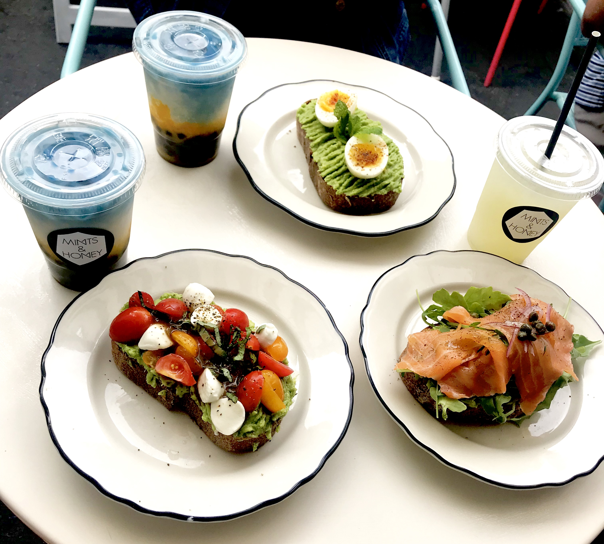
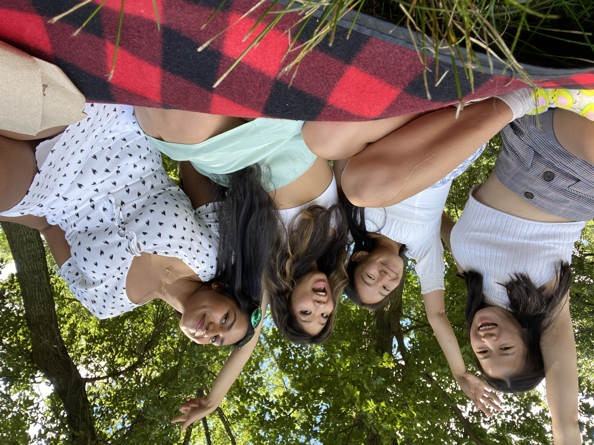
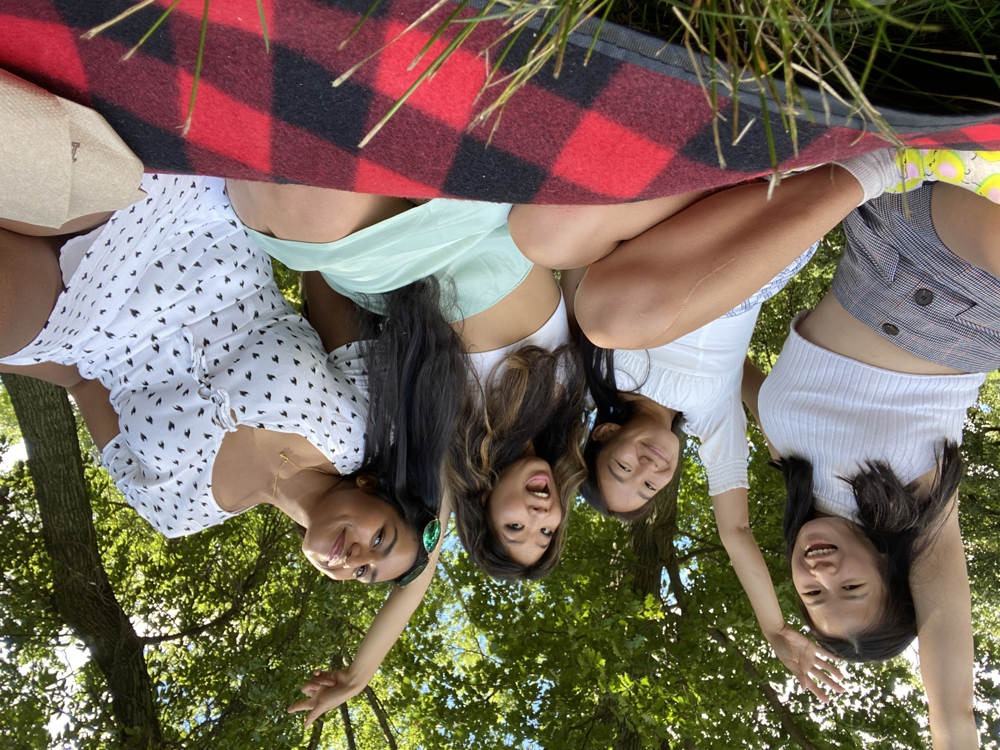

Hi there! My name is Blythe Weng and I am currently a senior at Carnegie Mellon University studying Information Systems and Human Computer Interaction. This summer, I interned remotely back home in California where I am originally from. I also went on a lot of hikes and trips to the beach. My favorite hobbies are hiking, biking, and any other physical activity that involves nature and the great outdoors!

Things I love!

 
